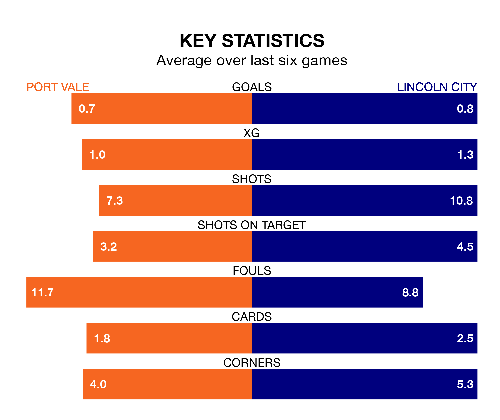

Port Vale are on a terrible run ahead of hosting Lincoln City at Vale Park on Saturday, with just one point collected from their last six games.
The Valiants have picked up just one draw in their last six EFL League One games, and face an Imps side whose last six games have brought three wins and three draws.
Vale are 22nd in the table after 31 games, of which they have won eight and drawn seven, earning 31 points.
Lincoln are 11 places ahead of the Valiants in 11th, with 11 wins and 12 draws putting them on 45 points.
With Lukas Jensen between the sticks, City can rely on one of the league's safest pair of hands. He has kept 12 clean sheets in his 33 appearances this season, and only one other 'keeper – Portsmouth's Will Norris – has been able to prevent the opposition scoring on more occasions in EFL League One.
In the home team's net, Connor Ripley has seven clean sheets in 31 games. He has conceded a goal every 62 minutes, 60% more often than the 102 minutes between goals for Jensen.
In the last 10 years, Vale and Lincoln have played each other on eight occasions. Vale won two of them, Lincoln four, and they drew twice.
On average, the Valiants scored 1.1 goals and the Imps 2.2 in those matches.
Their last meeting was on November 11, when they played out a 1-1 draw.
With 32 goals in 31 games so far this season, Vale are scoring at below the league average rate with 1.0 goals per game. And they are conceding more than average, letting in 50 goals at a rate of 1.6 per game.
The Imps are also below average scorers, with 1.1 goals per game, compared to a league average of 1.3. They have conceded 1.0 goal per game.
Vale's last match was on Tuesday, a 2-0 loss against Reading.
Lincoln beat Exeter City 1-0 last time out, on February 17, with Joseph Taylor on the scoresheet.
Updated: 10:08 (UTC), 23/02/24